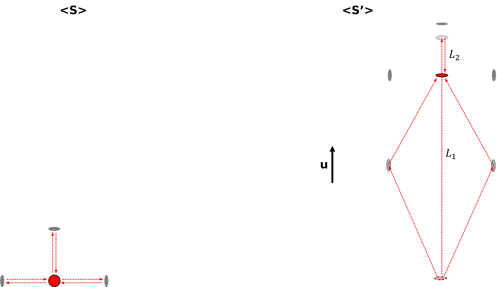
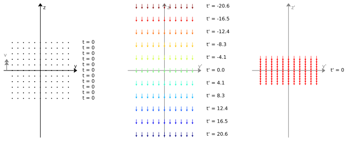
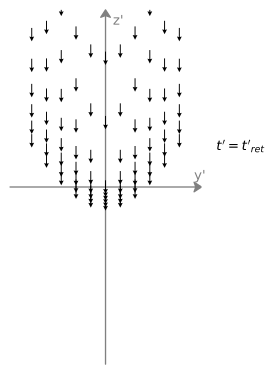

\(\nextSection\)
To understand how special relativity works we will need to first look at the classical understanding of the world, and using the fact that light somehow always moves at constant speed relative to everything observing it, we will see how we must change our laws of physics from the classical view for this to be true. Which in turn will lead to many interesting consequences. We will start with an overview of all the main concepts, to understand why we need special relativity and what it means, leaving the mathematical details and deeper insights for the next chapters.
We will use all the concepts in this chapter to obtain the mathematical framework in the next chapters, with this chapter we will use physical objects such as moving trucks on the road to represent the different frames of reference (points of view) of different observers, were as in the mathematical chapters we will use coordinate axis to represent the different frames of reference. You will see the direct parallels between the conceptual overview and the mathematical derivations later. This will provide an overview of all the required concepts for special relativity, building up the needed knowledge bit by bit starting with our classical understanding of how frames of reference work, and showing how our understanding has to change if we are to allow all observers to view light as moving at the same constant speed.
Classical Addition of Velocities
\label{Sect: classical velocity addition}
Let's imagine that a truck is moving forward on a road at a constant speed of 20 m/s (meters per second), on the top of that truck, is a cannon that fires a cannonball in the same direction the truck is moving. The ball travels at a speed of 100 m/s relative to the truck. Classically to find out how fast the ball is moving relative to the road, we add the speed of the truck and the speed of the ball together. So we find the ball is moving at a speed of 120 m/s relative to the road, and this is what we observe to happen. So in classical physics, velocities directly add, the ball relative to the road would move at the speed of the ball relative to the truck plus the truck's speed relative to the road, as shown in figure \ref{fig: truck cannonball}.
But this turns out to just be a very good approximation for objects in our normal day life which we are used to seeing, which are moving much slower than the speed of light (which is roughly 300 000 000 m/s), but we will get to this later. For now, in the next two sections, we will explain what an inertial reference frame is and how this works in the classical context so that you will be able to see more clearly the differences when it comes to special relativity.
Diagram, showing the speed of a cannonball from two different perspectives, (top) is from the truck's perspective with the cannon at rest and the road moving backward, the cannonball is shot and moves forward. (bottom) is from the road's perspective with the truck moving relative to it, when the cannonball is shot it looks like it is moving forward faster with the previous cannonball's speed plus that of the speed of the cannon that it was shot from.
Inertial Reference Frame
A reference frame can be thought of as an abstract coordinate system. The origin of its axis, its orientation, and its scale are specified by a set of points in space and their times. The purpose of it is to provide a standardized means of measuring and describing the times and positions of objects within that frame. In the previous truck example, we had the truck's reference frame moving relative to the road's reference frame.
Diagram showing a reference frame moving relative to another.
An inertial reference frame, is a reference frame that is not undergoing any acceleration. You can tell if you are being accelerated, as you will feel a force being applied to you, for example, in an accelerating car you will feel the chair being accelerated into you, with your body slightly lagging behind in the acceleration, and it is this basic principle for how accelerometers measure acceleration as shown in figure \ref{fig: spring boxes}.
Diagram of a ball, attached to the walls of a box by springs, with the ball centered in the box in the inertial frame, i.e. with no acceleration (left), and in a non-inertial frame (right) where the box is now accelerating to the right, The ball lags behind as the box accelerates.
Classical Inertial Reference Frames
To see how to swap between reference frames in special relativity we will first have to introduce what the classical swapping between two reference frames looks like. To illustrate swapping between frames classically, We will look at a setup of two rats on a treadmill with a platform as shown in Figure \ref{fig: 3d conveyor belt}, with three rocks hanging above the platform, the rocks are at rest relative to the room. The two frames of reference will be that of the treadmill's platform and the room in which the treadmill is in. Both rats start under the same rock, one runs to a rock positioned in the forward direction of the treadmill, and the other runs to an equally distanced rock to the side, they then return to the starting rock. Here the platform can be seen as the medium in which the rats move. Both rats travel at the same constant speed relative to the platform, with the platform either at rest or at a lower speed than the rats to allow them to get to the rocks.
Diagram of 3d view of treadmill platform, with two rats and three hanging rocks, with arrows representing the rats moving from a starting rock to two equally distanced rocks, with one in the opposite direction of treadmill platform and another in the perpendicular direction.
If the platform is at rest, they will both return to the starting rock at the same time. But if the treadmill is turned on and the platform is now moving, the rats will now have to also work against the movement of the platform to get to the rocks, this will lead to different distances the rats have to travel relative to the platform, and as a result, the rats get back to the starting rock at different times. The figure \ref{fig: treadmill} shows what the direction of movement of the rats and rocks look like in each of the reference frames.
Room's reference frame.
In the room's reference frame we have the platform moving backward, the rat moving straight ahead will have impedance to its movement from the backward movement of the platform but after it turns around it now has a boost from the platform to get back to the starting rock, were as the sideways moving rat will have to go sideways and also balances out the backward pull of the platform to keep the movement towards the hanging rocks. This gives different lengths of paths depending on the reference frame, as shown in figure \ref{fig: treadmill}. It also gives different times for the rats to return to the starting rock. This is what we would expect and see with this classical example of frame swapping, but next, we will look at the notion of a universal rest frame referred to as the aether and whether we can have the same sort of frame swapping when it comes to light traveling in two different frames of reference when we also have its speed needing to be the same in each frame.
The Aether
In the 1800s, the theory was that light was a wave and therefore would need a medium that filled the vacuum of space for it to travel through, called "the luminiferous aether", and that light would travel at a constant speed relative to this aether, like how the rats in the previous section moved at a constant speed relative to the medium of the treadmill's platform. If the aether existed then earth would be moving through it, illustrated in figure \ref{fig: Aether}.
A diagram showing the aether's and earth's movement relative to each other.
So an experimental setup by Michelson and Morley, shown in Fig. \ref{fig: Michelson_morley}, was devised to measure earth's movement through the aether \cite{EtherExperiment}, by measuring how it affected the speed of light in different directions when observed in earth's reference frame. It did this by splitting a single light beam into two perpendicular paths, that are then reflected back to be recombined and sent towards a light detector. By rotating the whole interferometer setup, the two light paths could be aligned with one parallel and the other perpendicular to the Earth’s motion through the presumed aether.
They reasoned that if the speed of light was constant with respect to the proposed aether, just like in the rat experiment from the previous section, the split light beams would recombine at different times. From the previous section's system of rats on a treadmill, we have the treadmill's platform as being analogous to the aether, and the rats as being analogous to the light, with both having the room that these experiments are done in as being the other inertial reference frame.
A diagram showing the Michelson-Morley experiment, we can take the part of the paths between the beam splitter and two mirrors to be analogous to the case of the paths in the previous section of the rat and treadmill system.
However, when Michelson and Morley performed the experiment, they found no difference in travel time to the detector for both paths, indicating that there was no difference in the speed of light in any direction in earth's reference frame. hence no dependence of light's speed on the supposed aether. This null result seriously discredited the aether theories and ultimately led to the proposal by Einstein in 1905 that the speed of light (in a vacuum) is a universal constant and is independent of the motion of the observer or source. And to allow for us to have this universal speed of light (in a vacuum), it will require us to change our ideas of how time and positions are perceived by different observers.
Speed of Light
The experiments showed light does not have a medium that it travels at a constant velocity relative to and therefore must instead travel at a constant velocity in a vacuum in all reference frames, independent of how fast the source and receiver of that light is moving in the frame, e.g. a moving truck's headlights as shown in figure \ref{fig: truck torch}. Light does move slower in objects such as glass but this is due to the interactions between it and the material, impeding the light's movement.
Light itself moves extremely fast compared to any other everyday speeds we are used to (roughly 300 000 000 m/s, it can travel the diameter of the world in the blink of an eye). This is why we do not notice any delay in things we see around us in everyday life, though we should keep in mind that there is this delay, e.g. the light we see from the sun was emitted by it eight minutes ago for it to reach us now, and the further an object is located from us, the further back in time we are currently seeing it because of this delay.
When we look at the same truck setup as in figure \ref{fig: truck cannonball}, but now have it in a vacuum, where the cannon firing a cannonball is swapped for headlights emitting light, we will find the same speed of light when measured relative to the truck or the road, but how can this be true?
A diagram, showing light emitted from a truck in two different reference frames, with the emitted light having the same speed in each frame, though with different frequencies and energies due to the Doppler effect, which will be explained later.
For this to be true, we need a new way of thinking about velocity addition, since the velocities of objects have to be added in a way that is consistent with the requirement that the speed of light is constant, but also gives the approximate classical addition at speeds of objects at much less than the speed of light, like how we observe with the cannon and truck in figure \ref{fig: truck cannonball}. Since the speed of the light depends only on the units of time and positions, the only way to correct for this is to have the measured positions and times of objects transform differently when swapping between reference frames than the classical way. This is what we will talk about next.
For the curious, it was the \href{https://scienceready.com.au/pages/determination-of-speed-of-light}{experiment by Ole Rømer} that showed that light traveled at a finite speed rather than being instantaneously emitted and received.
Position and Time
Time Dialation
\label{Subsect: Time Dialation}
Let's imagine a simple clock, as shown in Figure \ref{fig: truck clock}, made of a light pulse moving back and forth between two mirrors on a moving truck's floor and roof, we will keep time by taking a tick of this clock to be when the light travels from one mirror to the other mirror and back again. For an observer in the truck, they will see the light go straight up and down between the mirrors, but an observer stationary relative to the road will see not just the light traveling up and down but also with the direction of the truck, hence it will travel a longer distance between ticks.
But since the distance travelled by the light in the moving frame is longer and the speed of light is the same for both reference frames, we are only left with two possibilities to keep the speed of light invariant, either the height of the truck is shorter, to give the same path length for light so that the ticks happen at the same rate, or that time itself moves slower in moving objects, the first option leads to paradoxes as shown in figure \ref{fig: width contraction}.
A diagram showing why there must not be a contraction in the perpendicular direction to the frame's relative motion. The top figure shows a ball and cannon at rest, the bottom figures show the cannon ball being fired in the frame of the cannon (left) where the moving ball has a contracted width, and the frame of the ball (right) where the canon is now moving and has a contract width, with the ball at rest being the same size, both frames would contradict each other if there was a change in width of moving objects, as the walls of the cannon and the surface of the ball would overlap in one frame and have a gap between them in the other. So we require that there is no change in size perpendicular to the movement of the object.
From this paradox we are only left with the possibility that the perceived travel time of the light has to be longer in the road's reference frame, i.e. the light clock ticks slower to the observer on the road watching it as it moves.
How much slower the time is passing on the moving truck relative to the road observer, can be solved using the ratio of the lengths of the paths in each frame as they are shown in figure \ref{fig: truck clock}.
Diagram showing the extra distance light travels in the road's frame with the truck moving, therefore leading to the truck's time being perceived to move slower to an observer in the road's frame of reference.
The slowing of the ticking is also the same for any type of clock, and if you were to play a movie on the truck, it would take a longer amount of time for it to play through from start to finish for an observer watching it from the roads reference frame, i.e. it is the actual time itself being slowed down.
The closer the truck goes to the speed of light, the bigger the difference in how fast the road frame's time flows relative to the truck frame's time (this can be seen as a longer horizontal stretch in the path taken for the light from the perspective of someone standing still on the road, with the time between each tick approaching infinity as the speed of the truck approaches the speed of light).
If now we instead had two trucks both moving at the same speed relative to the road but in opposite directions. Each of the trucks, sees its own light moving vertically up and down while the other truck's light moves diagonally, and hence each of the trucks perceives the other's clock as ticking slower. An observer in the road's reference frame would see the trucks move at the same speed and hence the passage of time between ticks as being the same for both trucks. This is a confusing concept, and difficult to visualize but it will get easier with practice. For now, though, we are going to continue building up the concepts of special relativity.
Simultaneity
Let's imagine a truck in its rest frame, with a light bulb in the middle and mirrors on the front and back walls, if the light bulb gives off a pulse of light, the light will travel from the center of the truck to the mirrors simultaneously and back to the light bulb also simultaneously. But an observer on the road watching the truck drive past will see the light bulb simultaneously emit light in both directions and also simultaneously return to the bulb again. However, to do this the light reflects off each wall's mirrors at different times in the road's frame as shown in figure \ref{fig: truck simultaneity}. This is because the speed of light is the same for both directions but the truck is moving, meaning the back of the truck is moving towards where the bulb was when the pulse was emitted making the distances traveled shorter, and the light travels a longer distance to get to the front wall, due to the front wall moving away from it. Because of this the observer on the road will see the light hit the mirrors at different times.
A diagram showing how two events of light reaching the two walls of the truck are simultaneous in one frame but happen at different times in another, due to truck's movement in the second frame and the speed of light remaining the same.
So, times of events (like when the light reaches either mirror) are different for observers in different reference frames, there is no one true order of events, e.g. an observer in a faster-moving truck moving in an opposite direction would see the light reach the front wall first.
However for all observers the light will return to the central light bulb simultaneously. If two events happen in the same position at the same time (i.e. the light returning to the center of the light bulb simultaneously) then this happens simultaneously in all frames of reference.
A note here is that we are talking about times when the events actually happen in each frame and not the times in which the light from these events reaches the observer. Also, I have left out any mention of length contraction, which will be introduced in the next section, and why it needs to be equal in both directions from the lightbulb, i.e. for the light to simultaneously return to the light bulb they need to maintain equal distances of the walls from the central light bulb.
Length Contraction
If we have a truck in its rest frame with a square container with light emitted in all four directions from the center so that it will bounce off the mirrored sides of the truck and return to the center simultaneously. we require that in the moving frame they also all return to the center simultaneously, as multiple events that happen at a single point simultaneously in one frame, must happen simultaneously in all other frames. This time between the light being emitted and absorbed will be the dilated time, that was described in section (\ref{Subsect: Time Dialation}).
To achieve this simultaneity in the return of the light to the bulb, the length of the path of light in each direction has to be the same (as its speed is the same in all directions), we can work out the length of the upward path from the time dilation section (\ref{Subsect: Time Dialation}), and this is the length the path needs to be in the horizontal directions as well, the paths can only have this length if the truck length is contracted when moving, the exact amount of contraction can be worked geometrically, and it turns out that the ratio of the increase in the amount of time that passes before the light is reabsorbed is inversely proportional to the amount the truck is contracted in the direction of its movement.
A diagram, showing a truck with a square container in its rest frame (top), emitting light from a central bulb in the four directions, with all light being reflected by the mirrored sides back to the center. In the second frame with the truck now moving (bottom) we see the truck's length contracted and what the light paths would be in this frame
So now we have it that we know that moving objects must shrink in the direction that they move to allow for a consistent speed of light in each frame, but this is not noticeable at objects moving at speeds much slower than that of light. If you are not satisfied with this we can reason the need for length contraction in another way using three cars.
Another Illustration of Length Contraction
Say we have 3 cars that are equally distanced and at rest on the road as shown in figure (\ref{fig: cars}), the middle car sends out a pulse of light that reaches the front and back car at the same time to the road observer and the observers in the car when it reaches them both, all the cars accelerate for a predetermined fixed amount of time, so that after this acceleration period the cars are now moving but still equally spaced relative to the observers in the cars and the observer on the road. As for all observers the light reached the front and back cars at the same time.
Now if we do this a second time, with the middle car releasing another pulse, we have in the frame of the observers in the cars: again the front and back drivers receiving the pulses at the same time meaning that they again will start accelerating simultaneously, and again after the acceleration there will be the same equal distance between the cars. But for the observer on the road, they see the back car receive the signal first as that car is moving towards the point where the light pulse was emitted and the front car is moving away from it. This would mean the back car would start accelerating first to get to the final constant velocity and get closer to the front car before the front car begins to accelerate to that same final speed that the back car had already reached, hence the cars end up closer together after all of this. The observers in the car and the road observer, do not agree with what the distances between the cars are. This contraction of length between cars, in the road's frame in which the cars are moving, is called Lorentz length contraction, which means that objects that are moving faster become shorter, and the distances between the objects also become shorter.
Diagram that illustrates an experiment with three cars initially at rest and equally spaced on a road. The middle car emits light that reaches the front and back cars simultaneously, triggering all cars to accelerate for a predetermined amount of time. Now another light is emitted from the middle car after the acceleration has finished, the road observer sees this second light pulse reach the back car first, as it is moving towards where the light had been emitted, this causes it to begin accelerating before the front car. This results in the cars being closer together after acceleration, demonstrating Lorentz length contraction, However, to the car observer, the distance between the cars remains unchanged from the initial distances.
Doppler Effect
If we have a source at rest, emitting circular pulses of light with equal times between each pulse, we will have concentric circular pulses in this frame, but if we move to a frame where the source is now moving to the right, each circular pulse is now being emitted from a different position as the source is moving. Due to the source moving, each pulse will be emitted closer to the right-hand side of the previous pulses, creating a bunching up of the pulses (increase in frequency) in the direction of movement and a spreading out (decrease in frequency) of the pulses in the opposite direction, that is what happens in the classical version of the Doppler effect, e.g. you will notice that an ambulance or police car sounds different driving towards you and when driving away, this is due to the bunching up of the sounds waves in the direction of the moving vehicle. In special relativity, we also have to take the time dilation of the pulses into account, as there will be a longer time between each subsequential pulse, Due to perceived time moving more slowly for objects moving relative to the observer, this has a decreasing effect on the frequency in all directions, but directly in the direction of movement of the source this is outweighed by the frequency increase from the previous bunching up effect. Since the energy of the light is proportional to the frequency, it is also increased in the direction of motion of the source due to the Doppler effects and decreased in the opposite direction.
A diagram showing (left) a central source at rest emitting several circular pulses of light with equal time between each pulse, (right) the same source in a frame where it is now moving and emitting circular pulses of light, but each subsequential pulse is emitted from a different position as the source is moving, marked by a faded dot
One thing not mentioned yet in this picture so far is how the light is also affected by what is called the aberration, which is the change in the direction of each part of the emitted light pulse, which leads to light not being circularly symmetric in each of the spherical pulses, which will be explained in the next section.
Aberration
*** start
The picture painted of the Doppler effect in the previous section has yet to show the effect on the angular distribution of the light in each of the spherical pulses. Here we will show that there is also a higher concentration of light in the direction of the source's movement, as shown in Figure \ref{fig: truck aberrated}.
With the help of the previous length contraction section, let's imagine a truck with a spherical container with mirrored walls, a central bulb emits light in all directions, in the rest frame all light reaches the spherical wall at the same time and returns to the center bulb simultaneously.
Then in the moving frame, we have the spherical container length contracted and the light moving at the same speed but reflecting off the walls at different times, returning to the center bulb simultaneously, for this to be true, the directions of the light have to be aberrated in the way shown in the diagram to allow for this simultaneous return to the bulb.
Pulse emitted Pulse absorbed
Pulse emitted
From the diagrams, you can see how light is aberrated when emitted from a moving source relative to its rest frame and also when being absorbed by a source, the faster the source is moving, the more the direction of each part of the light pulse is aberrated.
If the speed of the source was to approach the speed of light, all emitted light would approach the direction of movement of the source, if the source was theoretically able to reach the speed of light, all light would be emitted in the direction of the source but also move at the same speed of the source, i.e. the source would move with the emitted light and it would not leave the vicinity of the source. Though the rate at which it emits it would also tend to zero. If a photon theoretically had mass and its influence of the gravitational force moved at the speed of light, then we would not be able to feel any gravitational effects outside the vicinity of it, due to all of its gravitational field being propagated in the direction of its movement and at the same speed as the photon.
Also in astrophysics, it has to be taken into account that the earth's view of the universe is distorted by aberration, as shown in diagram ref{...} *** diagram of earth's view of the universe is distorted from the aberration (example on wiki) ***
Relativistic Beaming
If we now take both the Doppler picture and the aberration picture from the previous sections together, so that if we have a source that in its rest frame is emitting a spherical pulse of light with evenly distributed angles. Then in a frame with the source now moving, we will have this spherical pulse's wavelength bunched up in the direction of movement (giving a change in the color of the light), with the angular spread of the light at a higher concentration in the direction of the movement of the source.
rest frame Moving frame
rest frame
rest frame Moving frame
rest frame
Retarded Field
If we were to have multiple pulses with a constant time between each pulse, and remembering that each pulses origin was from a point in the source's past position (the retarded position of the source), we can work out what the full view of all the pulses in the rest frame is in the moving frame, shown in Figure \ref{fig: full field transformation 1}. From this, we can work out the distribution and hence concentration of the light for any moving source relative to that of it at rest.
Source's Rest Frame Source's Moving frame
Source's Rest Frame
Perceived vs Actual Speed
Imagine that a ball one light year (the distance it takes light to travel in a year) away, is fired directly towards you. It will take one year for the first light from the oncoming ball to reach you. If the ball moves at three-quarters of the speed of light, the ball will hit you in four-thirds of a year (a year and four months) after it is fired. The last light from the ball will reach you just as the ball hits you. As you see it, the time between the first and last light from the ball is four months. During those four months, you will see the ball start at its initial position and travel a distance of one light-year. So the ball appears to you to have been moving three times faster than light. This is just how it appears to the observer due to the delay in the light signal/the retarded view of the system, leading to latency in how the system is observed.
This shows how important it is to take the delay in the light from objects into account when observing relativistic systems, this view is called the delayed/retarded view, i.e what we see now are objects in their past positions, and the further things are from you the further into the past we are currently seeing them.
A diagram demonstrating the perceived speed of a ball vs its actual speed
Velocity Transformation
Previously, we explored how velocities at the speed of light change between different frames of reference, that is their directions are aberrated, However, for objects moving at speeds less than light, we need the transforming speeds to be different as well as aberrated due to the transform needing to tend towards the classical transform as the speeds tend towards zero. To understand the velocity transformation, we will need to first delve into the mathematical details which will be covered in later chapters.
The More Abstract Properties...
The transformation of more abstract quantities that depend on position and time, such as momentum, energy, and mass do not have a simple visual interpretation, and this is the point at which the mathematics is needed for a proper understanding of how they transform. With the maths, you will find new conservation of momentum and energy laws.
Summary
A key early idea was that light traveled through a medium called the luminiferous aether. The Michelson-Morley experiment attempted to measure Earth's motion relative to this aether. Surprisingly, no difference was found in the speed of light regardless of direction. This conflicted with the intuitive addition of velocities, discredited the aether theory, and led Einstein to propose light's constant speed in all frames as a fundamental principle.
Special relativity emerged from the insight that light's speed in a vacuum is constant for all observers, regardless of the light source's speed relative to each observer. This required rethinking the concepts of time intervals and distances between points to accommodate light's fixed speed and led to the requirement that a clock moving relative to an observer ticks slower from the observer's perspective while also being contracted in the direction of its motion. This was shown in figure \ref{fig: truck clock} and figure \ref{fig: full truck transform}.
It also led to the simultaneity of events not being absolute, e.g. light emitted from the middle of a moving truck reaches the front and back walls at the same time as someone at rest in the truck. But someone standing still on the road sees the light hit both walls at different times, as shown in figure \ref{fig: truck simultaneity}. There is no universal "now" at a distance - observers relate events differently.
Classical physics provides an excellent approximation of reality at low speeds. Relativistic effects only become readily noticeable at speeds approaching that of light. We do not normally experience them because motions in everyday life are very slow relative to that of light which is roughly three hundred million metres per second. The faster an object moves relative to an observer, the more its lengths contract and its time dilates, to the observer.
When it comes to velocities, they combine differently than in classical physics. However, we must ensure that the transforms reduce to the intuitive addition of velocities of classical physics at low speeds while accommodating light's constant rate in all frames of reference. This leads to initially bizarre outcomes like apparent faster-than-light motion emerging from how relativistic optical effects play out across distances, due to the delay in light signals from objects at a distance. Nevertheless, special relativity gives a truer, more accurate picture of reality.
We also have seen that light's frequencies shift when emitted from a moving source due to space-time effects on wave propagation (the Doppler effect) and that light concentrates in the direction of the source's motion, the aberrational effect. Both together intensely focus light and radiation in the direction of rapidly moving objects, relativistic beaming.
These effects will all be explained more fully with math in the coming chapters, along with other effects that require the use of math to fully understand, as well as new conservation laws of energy, mass, and momentum. We will derive everything step by step starting with the transformation of positions and times between reference frames.
*** Explain what a photon sees, i.e. when it is emitted it sees a universe that is infinitely thin in direction of movement and the time between emission and absorption is then zero
meaningful conclusion:
- [ ] summarise the key points and how they relate to other parts of book
- [ ] discuss implications and applications of chapters concepts
- [ ] draw conections between this chapter and other chapters
- [ ] what this will allow us to look at later
- [ ] pose points to relfect on
- [ ] give questions still to be answered which will be in later chapters
- [ ] final sentence to allow this to flow into next chapter
\(\nextSection\)
Now that we have learned about the basic concepts of special relativity, we can let the mathematics begin, starting with classical relativity as a starting point, it will give us an understanding of how to transform between reference frames, we can then compare special relativity to this to help with our intuition.
Classical Relativity
For classical (Galilean) relativity, if we have two observers moving relative to each other at constant velocity and want to find how each observer would describe the positions and motion of a particle relative to them, we need to know the positions and times in one observer's frame and how to transform them into the other observers frame. i.e. if we have how one observer would describe the coordinates of a particle over time relative to them and we want to now know the coordinates of the particle with respect to the other observer, we need to know how the transformation of coordinates works.
Before special relativity, it was assumed that distances between two positions were the same for all observers, i.e. the first observer would see a stick and measure it to be the same length as another observer moving relative to them would measure it to be. long story short, lengths are the same for all observers in Galilean transform. Another assumption is that time is constant for everyone, i.e. clocks move at the same rate for each observer and if a particle was to emit light at a particular time. This light would be emitted at the same time for the other observers too.
So let's see how the mathematics works for the classical coordinate system transform between two observers. If we have the coordinate system in one inertial reference frame \({\lt \!\!S\!\gt }\) to describe an event \({E}\), which is given by the set of spatial and time coordinates \(({x},{y},{z})\) and \({t}\), and we want to find the coordinates of the event in another "primed" inertial reference frame/coordinate system that is moving at a relative speed \(v\) to the first frame in the z-axis, that was initially overlapping with the first frame at time \(t=0\), with the events coordinates now described by \(x{'}, y{'}, z{'}\) at time \(t{'}\). The direction of the second frame is in the upwards z-direction instead of being to the right in the case of the truck diagrams from the previous chapter, this is to help us when we use spherical polar coordinates later and to help see the symmetries.
Diagram, of a reference frame \({\lt \!\!S\!\gt }\) with its associated \((x,y,z)\) coordinate system at rest in this frame, it also shows a primed coordinate axis \((x{'}, y{'}, z{'})\) at time \(t=t{'}\) from when the axis where overlapping, associated with another inertial reference frames moving at velocity \(v\) in the z-axis, it shows an event with position vector \(\vec{OE}\) in this frame and the vector \(\vec{OO{'}}\) to this primed axis origin and the vector \(\vec{O{'}E}\) which is the vector from this primed origin to the event in the shown frame.
For frame \({\lt \!\!S\!\gt }\) we have its origin \({O}\) and an event \({E}\) located at
\begin{equation}
\vec{OE}=(x,y,z)
\end{equation}
at time \({t}\) from axis overlap, and a prime frame \({\lt \!\!S{'}\!\!\gt }\)'s origin \(O{'}\) moving at relative velocity \(v\) so that in the original frame we have after a time
so we have \(x=x{'}\), \(y=y{'}\), \(t=t{'}\) (time is assumed to be the same across reference frames in classical relativity), and for the z-components
\begin{equation}
\begin{aligned}
& z{'} = z - vt \\
& z = z{'}+vt{'}
\end{aligned}
\end{equation}
This shows the symmetry between the frames, as if we were originally in the \({\lt \!\!S{'}\!\!\gt }\) frame we would have the \({\lt \!\!S\!\gt }\) frame moving at -\(v\) relative to it, so we would expect that the inverse transformation would replace one frame's coordinates with the other and have the opposite frame velocity instead.
So the inverse of going from primed frame to original is just a matter of swapping all primed coordinates with original coordinates and changing the sign on the frame velocity, this can be seen from starting at time \(t=0\) we have the frame's origins overlapping and that there is a symmetry from here, we have the freedom to choose either frame to be the original, as no frame is particularly special and depending which one you pick the relative velocity is either \(v\) or -\(v\).
The full description of the position and time transform for an event is given as
The laws of physics are the same in all inertial frames of reference (i.e. if an observer carries out an experiment in an inertial reference frame, there would be no difference if the experiment was instead carried out within a different inertial reference frame)
The speed of light in a vacuum is the same in all inertial/non-accelerating frames of reference.
\end{enumerate}
\end{tcolorbox}
They are not the only assumptions, you may notice some small jumps in the logic when it comes to the derivation. But be aware small miss understandings have thrown people down the special relativity rabbit hole when trying to find inconsistencies or prove it wrong, throughout I will try to leave as few logical gaps as possible, and explain as simply and as in-depth as possible so that you do not do this yourself.
Derivations
For the derivation of the coordinate transformation between two inertial frames, we will follow a similar line of thought as we did in the first chapter on the conceptual introduction. For those who are curious, there is an alternative derivation using spherical light pulses given in Appendix \ref{spherical light pulse derivation}.
Time Dilation
A diagram showing a clock keeping time using light, light is emitted from the origin and reflected off a mirror back to the origin, shown here in two different frames (describe what things are in the diagram)(need axis labels)
We can have a clock that keeps time using a light pulse being emitted from a bulb towards a mirror and back again, recording a tick on its clock each time it returns to where it was emitted, taking a time \(\Delta \tau\) in the rest frame to return. The distance the light travels to the mirror and back in this time is
\begin{equation}
2W=c\Delta \tau,
\end{equation}
the distance the bulb travels during this in the moving frame is
where \(\Delta t{'}\) is the time it took light to return in moving frame and \(u\) is the speed of the bulb which is in the opposite direction of the primed frame relative to the proper frame, i.e. \(u=-v\), the distance light travels in this time is
\begin{equation}
2D = c \Delta t{'},
\end{equation}
this forms a triangle, so we have the square of the hypotenuse \(2D\) equal to the square of the lengths \(W\) and \(L\):
So we take this outcome as the time taken between two events in the same position in the moving frame taking longer than in the rest frame of the clock, due to the longer distance it has to travel at the same speed.
Length Contraction TODO

A diagram, showing a central bulb emitting light in the three directions, with all light being reflected by the mirrors back to the center, this is shown at rest on the left and moving in another inertial frame with the system now moving, with its length slightly contracted in the direction of movement.
If we have a system in its rest frame with light emitted in three directions from the center, one directly in front and the other two to the sides, with equally distanced mirrors in the three directions so that they will be reflected back and return to the center simultaneously. we require that in the moving frame they also all return to the center simultaneously, as multiple events that happen at a single point simultaneously in one frame, must happen simultaneously in all other frames. This time between the light being emitted and absorbed will be the dilated time from the previous section. To achieve this simultaneity in the return of the light to the bulb, the length of the full path of light from there center to the mirrors and back in each direction has to be the same (as its speed of light is the same in all directions and the return time has to be the same), we can work out the length of the sideways paths from the time dilation section, and this is the length the path needs to be in the vertical directions as well, the paths can only have this length if the system length is contracted when moving in the direction of movement. Note that there is no contraction in the perpendicular direction to the movement due to the paradox explained in figure \ref{fig: width contraction}.
The pulse sent forward has a distance
to travel to get to the mirror that is moving away from the point it was emitted, where \(t{'}_1\) is the time taken to get there and \(D{'}\) is the distance between the mirror in front and the bulb and \(u\) being the speed the bulb and mirrors are moving in the primed frame. After this, the light then has to travel back to the bulb a distance
we take from this that distances in the direction of movement of an object are contracted in its direction of movement compared to the rest frame of the object.
Position and Time Transformation
A diagram showing an event in a frame with another primed frame's axis shown moving in the z-direction.
If we are in a frame \({\lt \!\!S\!\gt }\) with origin \(O\) at position \((0,0,0)\) and a primed frame \({\lt \!\!S{'}\!\!\gt }\) moving in the z-direction at velocity \(v\) such that the position of the primed origin in this frame is
at time \({t}\) from when the origins overlapped, if there is an event (let's say light or another object reaching a mirror that is moving with the primed frames axis) described in this frames coordinates as
\begin{equation}
E = (x,y,z,t)
\end{equation}
with the spatial coordinates shown in the diagram as
\begin{equation}
\vec{OE}=(x,y,z)
\end{equation}
in the primed frame we have the event described as
now in the current frame, we have the primed frame's axis moving with the mirror, from the previous chapter we should have this primed distance in the z-direction to the event contracted, as the primed z-coordinates are contracted in this frame, as seen from length contraction section; the events z-coordinate is \(z=z{'}/{\gamma}\), so that distance between the primes origin and the event in this frame (not the primed frame) is
noting that we have the x and y-components unaffected due to the cannon and ball thought experiment from the first chapter. From the diagram, we can see
If we were instead in frame \({\lt \!\!S{'}\!\!\gt }\) we would have \(\vec{OE}=(x,y,z/{\gamma})\), \(\vec{OO{'}}=(0,0,vt{'})\), and \(\vec{O{'}E} = (x,y,z{'})\), doing the same for these we have
\begin{equation}
z = {\gamma} (z{'}+vt{'})
\end{equation}
This should be expected as this shows the expected symmetry between the frames because if we were originally in the \({\lt \!\!S{'}\!\!\gt }\) frame we would have the \({\lt \!\!S\!\gt }\) frame moving instead at -\(v\) in the z-direction relative to the \({\lt \!\!S{'}\!\!\gt }\) frame, so we would expect that the inverse transformation would replace one frame's coordinates with the other and have the negative of the velocity instead.
Now substituting the z transforms into each other we have
\begin{equation}
z = {\gamma} ( {\gamma} (z-vt)+vt{'})
\end{equation}
For the time transform the \(\frac{vz}{c^2}\) term is the cause of simultaneousevents in one inertial frame no longer being simultaneous in another inertial frame, and the gamma factor \({\gamma}\), is the term that causes the overall change in how fast time flows relative in each frame. In the spatial coordinate transforms the gamma factor is the cause of the change of lengths in the direction of the frame's movement. How the transformation works is shown in figure \ref{fig: coordinate transform}.

A diagram, showing a grid of points at time \(t=0\) that are at rest in their proper frame (left), giving the direct transformation into the moving primed frame (middle) where the points are now moving in the negative z-direction with the colors and labels showing the desynchronization of the primed times \(t{'}\), the next figure (right) shows what these points would be when they are synchronized with the origin's time \(t{'}=0\). *** split plots into several svgs and for other set later too, also call first picture "initial" frame of reference and others primed
For the coordinate transforms in the previous section we get back the classical coordinates transform for frame velocities much smaller than the speed of light, i.e. with \(v\ll c\) we have \({\gamma} \approx 1\) we get
\begin{equation}
t{'} \approx t
\end{equation}
\begin{equation}
z{'} \approx z - vt
\end{equation}
which is the expected result for the classical coordinates transform, and what we are used to seeing things work in everyday life. The influence of the gamma factor is shown in figure \ref{fig: Gamma Factor}.
A diagram, showing the magnitude of the gamma factor with increasing ratio of frame speed to the speed of light, with \({\gamma}\) tending to infinity as \(v/c\rightarrow 1\).
Velocity
from taking the infinitesimals of equations from eq. \eqref{eq: Lorentz transformation}, we have the velocities as
with \(\mathbf{V}\) being the frame's velocity in any generalized direction, instead of just being in the z-direction
Acceleration
To find how the acceleration of a particle transforms for an observer in two different frames we take the differential of the velocity transform eq. \eqref{eq: velocity transform} and use the differentiation rules for two generic functions \(f\) and \(g\): \(d(gf)=f dg+g df\), and \(d[f(g(x))]= dg(x) * df(g(x))\)
\(\nextSection\)
Light travels extremely fast (roughly 300,000,000 m/s) compared to other everyday speeds we are used to. In the blink of an eye, light could travel around the world twice. We do not need to normally worry about the delay in the light signal, as the time to propagate the distances in our everyday world is very short, so the signal can be approximated as being instantaneous, therefore ignoring the more complex modeling of the delayed signal. But when it comes to particle physics or astronomy, we might be dealing with speeds close to that of light or also huge distances, e.g. light has taken 152,000 years to travel from the Andromeda galaxy, so we are currently seeing this galaxy where it was and how it looked 152,000 years ago. These past positions that we currently see are called the retarded positions/delayed view positions.
Relativistic Observers Delayed view
*** change \(\theta_c\) to \(\alpha\)
When looking at moving objects we see them where they were in their past positions, due to the delay in the light signal, so let's talk about the transform showing a source particle emitting a photon to an observer, showing the retarded position the observer sees.
Source and observer's rest frameprimed frame
Source and observer's rest frame system:
If we take the rest frame of an observer and a particle that emits a pulse of light from its position at \(\mathbf{R}\) so that it is received by the observer at the origin, at time \(t=0\).
The time the pulse of light was emitted is \({T}_{e}= -\frac{|\mathbf{R}|}{c}\) (were \(\frac{|\mathbf{R}|}{c}\) is the time it takes light to propagate along \(\mathbf{R}\) to the origin), and the velocity of that light that is propagating towards the origin is
the position vector and light's velocity are in opposite directions which can be seen due to the emitted time being negative. If you wish to have this in terms of the position vector angle from the z-axis you can use the equation for the angles \(\theta_{R} = \theta_c - \pi\). Now inputting the delayed positions and times (with origin time \(t=0\)) in the first frame into the coordinate transform we get the delayed position in the primed frame as
we can see that this does agree with the light's velocity transform as well, as it is in the direct opposite direction to \(\mathbf{R}\) as it should be. With the light being received at the origin of the primed frame axis at time \(t{'}=0\), this is the delayed position, if you wanted to find the position of where the particle actually is, we would need to propagate this to the current time of zero of the observer, given by
How the delayed view of coordinates is taken into account after a transformation is shown in the figure below.

A diagram, showing an initial grid of points, representing position coordinates, at time \(t=0\) that are at rest in their proper frame \({\lt \!\!S\!\gt }\), with an observer at the origin (left), giving the direct transformation into the moving primed frame \({\lt \!\!S{'}\!\!\gt }\) (second) where the points are now moving at velocity \(-v=-0.9\) which is in the negative z-direction with the colors and labels showing the desynchronization of the primed times \(t{'}=- {\gamma} \frac{zv}{c^2}\), the next figure (third) shows what these points would be in the same primed frame when they are synchronized with the origin's time \(t{'}=0\), the last figure (fourth) shows the same primed frame \({\lt \!\!S{'}\!\!\gt }\) but now with the particles positioned where they would be seen to be at by an observer at the origin with the observers time \(t{'}=0\), these positions are due to the delay in the light from these particles taking time to get to the observer, also known as the retarded positions of the particles.
*** todo: could include the plot of a larger grid of points to show the distribution of delayed view of particles better, or give the heat map of the density of delayed view coordinates
Steps for Changing Frames
This section outlines the steps that should be taken to change between two inertial frames:
Firstly let's talk about going from the retarded coordinates of objects in one frame to a second frame. So if in your initial frame, you have an observer at rest at the origin, and different objects are moving around in this frame, if we take the retarded positions \(\mathbf{R}_{ret}\) of the objects (i.e. as the observer sees them positioned due to the delay in the light from the object), and use the retarded times of these objects which is \({t}_{ret}=- \frac{|\mathbf{R}_{ret}|}{c}\) with the coordinate transform, then these retarded positions in the initial reference frame will be transformed to their retarded positions in the second frame at their retarded times within it.
Another option is that you want to go from the object's positions that have times that are synchronized with the observer to positions that are also synced with the observer in the primed frame. Then we need to start with all objects where they currently are at \(t=0\) then the coordinate transformation transforms the positions to the primed positions in the second frame, but at desynchronized times, so that we will have to propagate these objects forward or back in time until they are all at the time of the observer at the origin which is \(t{'}=0\) if the velocities of the objects are constant then you will only need to find their primed velocities, but if the initial frames velocities are not constant this is then a bit trickier, as you will have to worry about the transformations of acceleration to find its position at \(t{'}=0\).
This math section is just for reference in later sections,
Diagram of an axis showing spherical polar coordinates
For a given coordinate \(\mathbf{R}\) we have the Cartesian coordinates \((x,y,z)\), but we can also write this in terms of spherical polar coordinates \((r,\theta,\phi)\) where the angles from the Z-Axis and X-axis respectively are \(\theta\) (between 0 and \(\pi\)) and \(\phi\) (between 0 and \(2\pi\)), and \(r\) is the distance to the point from the origin, i.e. the magnitude \(|\mathbf{R}|\). So that the coordinate can be written as
\begin{equation}
\bbox[#fff9cf, 10px, border-radius: 10px; border: 3px solid black]{
\mathbf{R} =
\begin{pmatrix}
x \\
y \\
z \\
\end{pmatrix}
= r
\begin{pmatrix}
\cos{\phi}\sin{\theta} \\
\sin{\phi}\sin{\theta} \\
\cos{\theta} \\
\end{pmatrix}
}
\end{equation}
with \(r=\sqrt{x^2+y^2+z^2}\), \(\cos\phi= \frac{x}{\sqrt{x^2+y^2}}\), and \(\cos\theta=\frac{z}{r}\). Some useful formulae for later are the unit vectors
The speed of light remains the same after transforming between frames, but the velocity is not as the direction changes. The velocity transformation in the case where the speed is that of light, \(|u|=c\), with the direction in the initial frame at an angle \(\alpha\) from the z-axis and \(\varphi\) from the x-axis, so that in spherical polar coordinates the velocity of light is
This still has the same speed of light which can be shown by taking the magnitude of the velocity vector (i.e. the square root of the squares of all of its elements). However, the angle of propagation has been changed.
Doppler Effect
Rest Frame Moving Frame
Rest Frame In the rest frame of a source \(s\), if it emits a wave at the speed of light in any direction, we have the length the wave has traveled from the source in the time \(d\tau\) as being
\begin{equation}
d\lambda = cd\tau
\end{equation}
If we change to a frame where the source is now moving at speed \(u_s^{'}\) in the z-direction and we have the wave now emitted at an angle \(\alpha{'}\) from the z-axis, traveling distance \(cdt{'}\) in a time \(dt{'}\), with the particle moving a distance \( u_s^{'} \cos\alpha{'} dt{'}\) in the direction of this emitted part of the wave, this leads to a bunching up of the wave in the direction of the movement of the particle, as the same amount of the wave has been emitted in this primed time, but the distance it has traveled from source is
rest frame The propagation directions of the light as seen in figure \ref{fig: aberrated emitted light}, are transformed such that the angles between them and the Z-Axis, have the aberrational relationship
This is the relativistic aberration formula \cite{einstein1905electrodynamics}, it shows how the field's propagation direction transforms. Figure \ref{fig: aberrated absorbed light} shows what would happen in the case of incoming light from all directions.
rest frame moving frame
rest frame It can be seen from eq. \eqref{eq: Cosine transform} that as a source's speed tends to the speed of light, \(\cos\alpha{'}\) tends to \(1\) as the top and bottom of the fraction cancel each other out, hence all emitted or absorbed light in the source's rest frame tends to the direction of the source's movement. But we also have to remember that if there was any time between the start and finishing of the emitting the light, this time would tend to infinity as well, basically any emitted light would remain in the vicinity of the source.
Transform of Light Pulse from Origin
proper frameprimed frame with moving source
proper frame As visualized in figure (\ref{fig: Retarded field outward field transform}). If we have a light source particle \(s\), in its rest frame that had emitted a pulse of light in one direction such that it propagates along \(\mathbf{c} {T}_{p}\) at an angle \(\alpha\) from the z-axis and is currently at position \(\mathbf{R}\) at time \(t=0\), where \(\mathbf{c}\) is the velocity of light and \({T}_{p}\) is the time it took to propagate to \(\mathbf{R}\).
Using the coordinated transform from eq. \eqref{eq: Lorentz transformation} on \(\mathbf{R}\) with \(t=0\) we get
\begin{equation}
\label{eq: displacement transform}
\begin{aligned}
\mathbf{R}{'} & =
\begin{pmatrix}
x \\
y \\
{\gamma} z \\
\end{pmatrix}, \\
\text{at time \ \ \ } \\
t{'} & = - {\gamma} \frac{vz}{c^2} \\
\end{aligned}
\end{equation}
the light pulse's velocity using the velocity transform from eq. \eqref{eq: velocity transform for light} in Cartesian coordinates and particles speed in the primed frame with \(v=-u_s\) is
to find the position the light pulse is currently at, at time \(t{'}=0\), we have to rewind its time from the position \(\mathbf{R}{'}\) that it is at when using the Lorentz transform at time \(t{'}= -{\gamma}\frac{vz}{c^2}= {\gamma}\frac{u_s z}{c^2}\) taking away the displacement it propagated in this time to get the current position of the light to be (\(t{'}_{p}=- t{'}_{ret}\)).
The previous section can be used to show us what happens to the angles of propagation in a spherical pulse of light with evenly distributed angles. Substituting \(\frac{x}{\|\mathbf{R}\|}= \cos{\varphi}\sin{\alpha}\), \(\frac{y}{\|\mathbf{R}\|} = \sin{\varphi}\sin{\alpha}\) and \( \frac{z}{\|\mathbf{R}\|} = \cos{\alpha}\) for spherical polar coordinates, which leads to
Source's Rest Frame If we then did the same for multiple pulses to see how they transform, noting that the time between each pulse is the dilated time in the primed frame.
Source's Rest Frame *** What is the change in the rate of change of direction at a coordinate of the light \(\frac{d\alpha(y{'},z{'},t{'})}{dt{'}}\) (maybe try \(\frac{d\cos\alpha(y{'},z{'},t{'})}{dt{'}}\) and \(\frac{d\sin\alpha(y{'},z{'},t{'})}{dt{'}}\) instead) and find at \(t{'}=0\) what is the change in the angle with change in position \(\frac{d\alpha(y{'},z{'},t{'})}{dy{'}}\), \(\frac{d\alpha(y{'},z{'},t{'})}{dz{'}}\) and \(\frac{d^2\alpha(y{'},z{'},t{'})}{dy{'}dz{'}}\)
*** What is the density of the field at a certain point, using \(k \frac{1}{R^2}\) in a proper frame, and then taking into account the distance from coordinate to retarded position of the source and then the aberration and Doppler effect
Flux from Point Source
- flux describes the rate at which a quantity flows across a surface (flowrate per unit area)
Surface element
...
The surface element spanning from \(\theta\) to \(\theta + d\theta\) and \(\phi\) to \(\phi + d\phi\) on a spherical surface at (constant) radius r is then
A solid angle \(\Omega\) is a measure of the amount of the field of view from some particular point that a given object covers.
The fraction of the field of view covered from a point is given by \(\Omega/ 4\pi\)
Field Flux
A proper frame of a particle's differential solid angle element (definition given in previous chapter (maybe move that subsection to here))
encompasses a certain amount of the wavefront, this is the same amount of the wavefront that is encompassed by the coinciding aberrated differential solid angle
We can calculate this element by differentiating both sides of eq. \eqref{eq: Cosine transform} with respect to \(\theta\) \cite{hogg1997special}, which gives
as \(v=-u_s\) now using this and \(d\phi{'}=d\phi\) (as the angle \(\phi\) is always perpendicular to the motion of the particle and hence unaffected by transformation ) we have the solid angle in the primed frame given as
The relative primed wavefront strength at a given angle is taken as being proportional to the amount of the wavefront per solid angle in the primed frame relative to that in the proper frame, referred to here as the aberrational wavefront strength weighting, given as
(define what I mean by strength weighting)
*** This flux doesnt take into account that the source keeps changing position, so at a change ds from position field is coming from a different retarded position of the source, so theres a rotation of direction and a different flux, theres gradients and rotations
*** This flux transform is the change in flux in the emitted direction from the source only not what another particle would feel
\(\nextSection\)
Quantities that are frame-independent, i.e. do not change when we transform between inertial reference frames, are called lorentz invariant.
In this chapter, we will see the invariant quantity related to space-time coordinates and use this to find invariant properties associated with velocity, which will lead to the more abstract conservation relation of momentum energy and mass. We will find a new quantity with the units of energy that has a term which approximates to the kinetic energy of a particle at low velocities and another term that suggests particles have a new type of energy, that was not previously in classical physics, that depends on the mass of a particle (mass-energy equivalence), this will all lead to a new conservation law of energy. The reason we care about the concept of energy is that it has a conservation relation that can be used as a tool to help us make calculations and model more complex systems.
Space-Time Interval
*** maybe explain the interval on a complex triangle instead with it being the hypotenuse and sides being cti and r
We define a quantity called the space-time interval \(\Delta S\) between two events in a generic inertial reference frame \({\lt \!\!S\!\gt }\) as:
All inertial frames of reference agree on this interval as it is invariant between frames, as \(\Delta S=\Delta S{'}\), which can be shown when we sub the values from equation \eqref{eq: interval of Coordinates} into the primed version of this last equation
From here forward we will be making some jumps in logic and assertions, leading to claims of what we will call the total energy and rest mass energy, but I will try to give as much reasoning as I can for these choices in assertions.
*** quantum mechanics may help with reasoning for parts of the energy-momentum reasoning
We can see from the previous section that if a particle is moving in a particular inertial reference frame we can define the space-time interval of its coordinates in this frame as
and if we divide by the square of the proper time that passes for the particle in this interval \(\Delta\tau\), so that now taking the limit as the change in time in the interval goes to zero we get an abstract invariant quantity that we will call the space-time velocity
It can be seen that this is still an invariant quantity as the speed of light is constant in all frames. Now by multiplying both sides by \(c^2\) and the square of the rest mass \(m\) of the particle we have the square of an invariant quantity with the units of energy, that is equal to \(mc^2\) and give the equation to be
This equation's first quantity is an energy that does not depend on the speed of the particle, and only on its rest mass, we shall call this the rest mass energy and this can be taken as a new type of energy all masses have even when at rest. The second quantity is the classical kinetic energy formula, the rest may be seen as higher-order kinetic energy terms that are very small for \(u\lt \lt c\), so this seems to be a formula for the total energy of a particle in the absence of a potential field (i.e. no change in potential energy) with added terms which become non-negligible at larger particle speeds, we will denote this total energy \(E\). Taking this assertion we have
so this total energy is equal to its rest energy squared plus a second energy squared that depends on its speed, this second quantity along with the Taylor expansion of \(\gamma_{u}\) gives
which at small particle velocities is approximately \(muc\) with \(mu\) being the classical momentum, we could assert that this whole energy is momentum in the relativistic context, i.e.
\begin{equation}
p = \gamma_{u} mu
\end{equation}
as it has the same units and is approximately the classical momentum at small particle speeds.
\begin{equation}
E_0 = mc^2
\end{equation}
This is the energy it has from its rest mass, if a particle a particle at rest was to decay into photons, the photons emitted from this would be equal to this energy. The final energy-momentum equation is then given as
*** Outside the scope of SR, should we state that the mass is a measure of its energy content instead?
Energy-Momentum Relation For Photons
*** First associate the energy of photon E = hf then find its equivalence in mass, then sub this in, and then say momentum for the photon is then hf/c
For a Photon we have the mass equal to zero and the momentum as \(p_{light} = \frac{hf}{c}\) which is taken from quantum mechanics and the energy-momentum relation as
\begin{equation}
E = c p_{light} = hf
\end{equation}
where \(h\) is Planks constant and \(f\) is the frequency of the light.
nothing is derived here, just states what to do for a photon
Energy-Mass Equivalence
*** Imagine we have a particle at rest emitting light in all directions so that afterward it is still at rest, but in another frame we have we have this particle moving and the emitted light aberrated, but we still need the particle to remain at a constant velocity after emission. (maybe include a rotation in the impulse/effect of light in each direction on the particle of has)
*** - if we have a ball in its rest frame that emits a flash of light evenly in all directions, we will have the ball's energy decrease by the amount of energy of the emitted light, and it will remain at rest after due to the light being emitted evenly in all directions
- its kinetic energy is zero in this frame
...